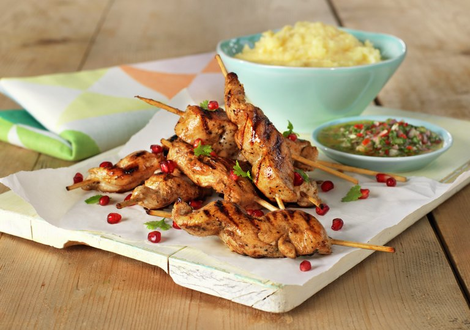

Chilenske Kyllingspyd

Deilig!
Spennende kyllingspyd inspirert av det chilenske kjøkken! Pebre og polenta er friskt og godt tilbehør som passer utmerket til marinert og grillet kylling.
- saft av 2 stk. appelsin
- saft av 1 stk. sitron
- 1 båt finhakket hvitløk
- 0,5 ts tørket oregano
- 0,5 ts malt spisskummen
- Bland alle ingredienser til marinaden i en liten skål.
- Skjær kyllingfilet i tykke strimler og legg dem i en plastpose. Hell på marinaden og knyt posen godt igjen. Mariner kjøttet i kjøleskap i minst 4 timer, gjerne natten over.
- Ta kyllingstrimlene ut av marinaden og tre dem på spyd.
- Rør sammen alle ingredienser til pebre.
- Kok opp vann, ha i salt og pisk inn polentamel. Pisk godt i ca. 1 minutt til polentaen blir passelig tykk i konsistensen. Trekk kasserollen av platen og rør inn smør og parmesan. Smak til med salt og pepper.